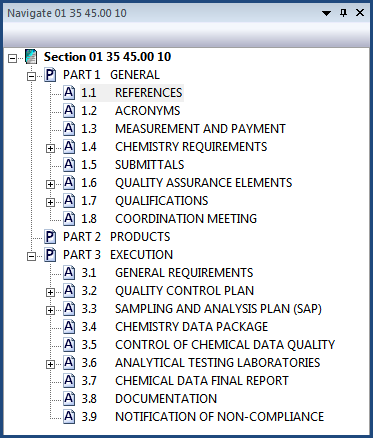

The Toolbars and Docking Windows view options control the on-screen display of the SI Editor's Standard Toolbar, Tagsbar, and Navigator within the SI Editor. Each of these elements offers quick shortcuts to common actions, enhancing productivity.
The Standard Toolbar option controls the visibility of the Toolbar. This Toolbar is designed for efficiency, providing immediate access to fundamental file management tasks like New, Open, Save, Print, Find, Revisions, etc. The Toolbar visibility can be toggled on or off.
To customize it, click the Toolbar Options button at the end of the Standard Toolbar.
The Tags option controls the visibility of the Tagsbar, which is used for managing and applying specific tags or formatting to frequently used elements within the specification. The Tagsbar visibility can be toggled on or off.
To customize it, click the Toolbar Options button at the end of the Tagsbar.
The Navigate option allows you to show or hide the Navigator, which aids in navigating through the Section structure.

The Options allow you to customize different aspects of the Toolbar and Docking Window behaviors and appearance.
 Watch the SI Editor and Section Structure Overview and The Navigator eLearning modules within Chapter 3 - Editing.
Watch the SI Editor and Section Structure Overview and The Navigator eLearning modules within Chapter 3 - Editing.
Users are encouraged to visit the SpecsIntact Website's Support & Help Center for access to all of our User Tools, including Web-Based Help (containing Troubleshooting, Frequently Asked Questions (FAQs), Technical Notes, and Known Problems), eLearning Modules (video tutorials), and printable Guides.
| CONTACT US: | ||
| 256.895.5505 | ||
| SpecsIntact@usace.army.mil | ||
| SpecsIntact.wbdg.org | ||